Практика 11. Дисбаланс в играх¶
Продолжение характеристических функций. В исходном плане это вторая половина той же пары; самостоятельная на харфункции — «всем +баллы».
Виды баланса¶
Асимметричная пошаговая соревновательная игра: баланс фракций.
Симметричная пошаговая соревновательная игра: баланс первого хода.
Кооперативная игра: баланс сложности.
Также:
- Баланс промежуточных шагов — иначе некоторые стратегии просто не нужны.
- Баланс создания персонажа — если одна из идей игры это билдостроение. Простой пример: получить 2 золота или 2 пищи, но в игре в любой момент можно купить пищу за золото.
Такую ситуацию назовём строго лучше.
Это огромная дыра в балансе, которую тяжело не заметить на тестах, и встречается редко. Поэтому разбираем вероятностные модели:
- Почти всегда лучше — альтернатива иногда превосходит, но если присмотреться к игре, это слишком редкая ситуация.
- В среднем лучше — одна альтернатива немного лучше другой, но из-за большого числа запусков (часто в ставках) разница становится ощутимой.
Исторические задачи¶
Задача Галилея. Какая сумма чаще выпадает при бросании трёх костей: 9 или 10 очков?
Задача Шевалье де Мере. Игральная кость бросается четыре раза. Рыцарь бился об заклад, что хотя бы один раз выпадет шесть. Правда ли, что он будет выигрывать чаще, чем проигрывать?
Задача Ньютона. Какое из событий более вероятно:
- появление хотя бы одной шестёрки при подбрасывании шести костей;
- появление хотя бы двух шестёрок при подбрасывании 12 костей;
- появление не менее трёх шестёрок при бросании 18 костей?
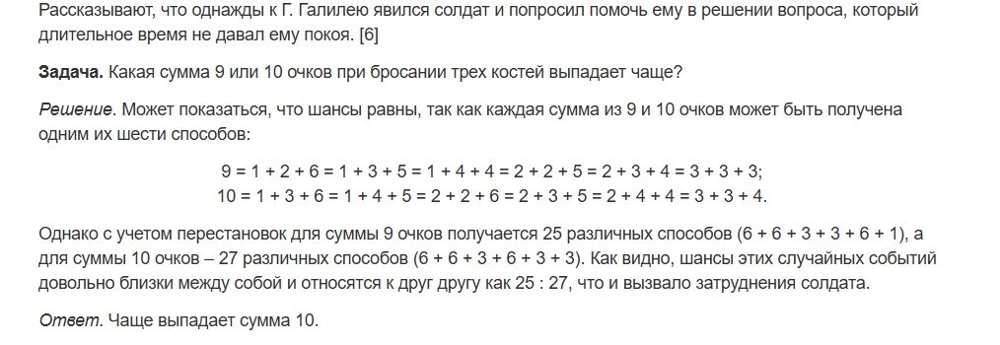
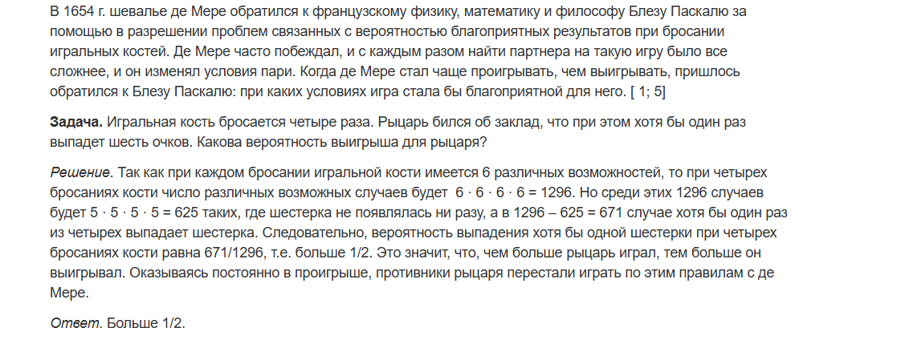
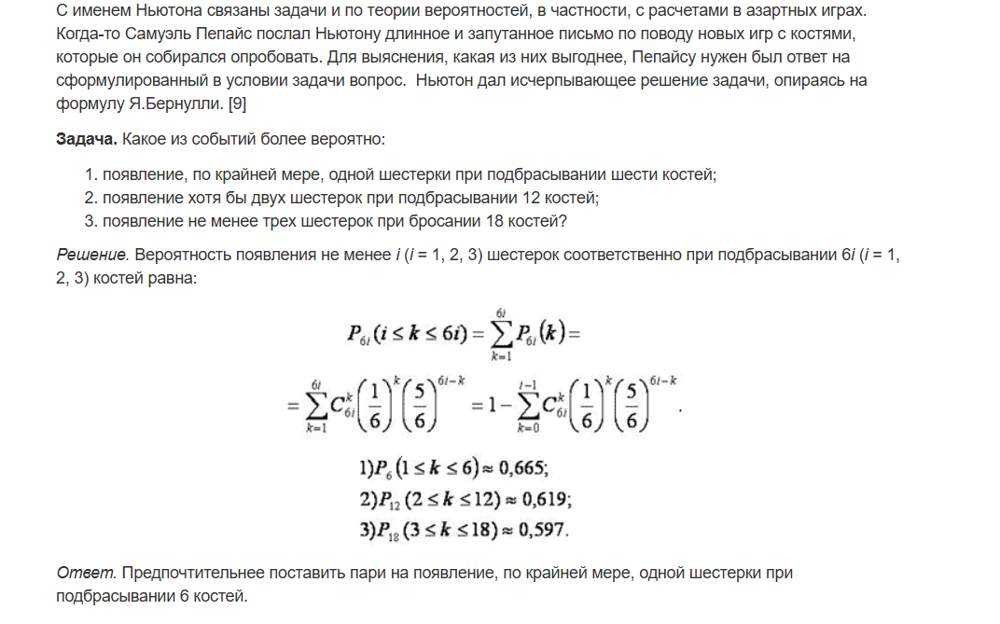
Как математики ломали блэкджек¶
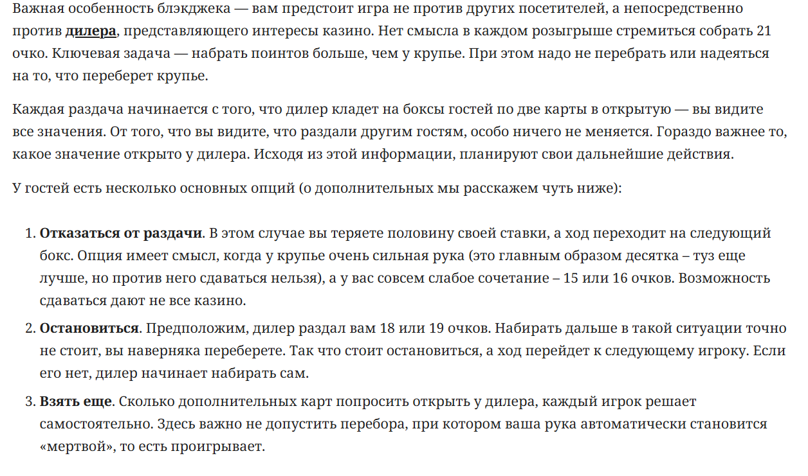
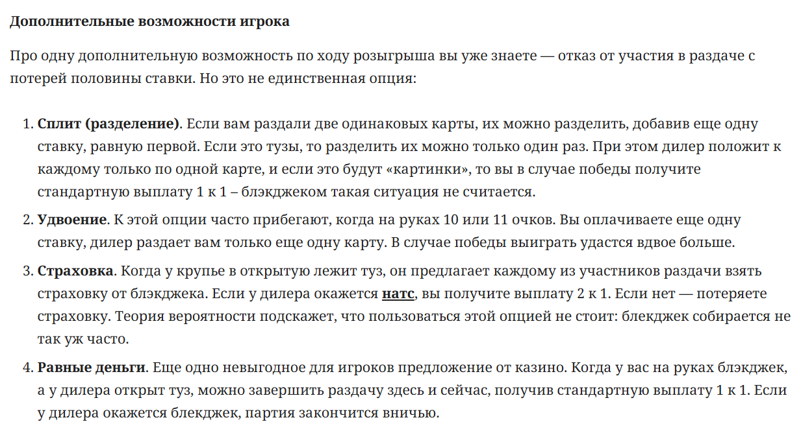
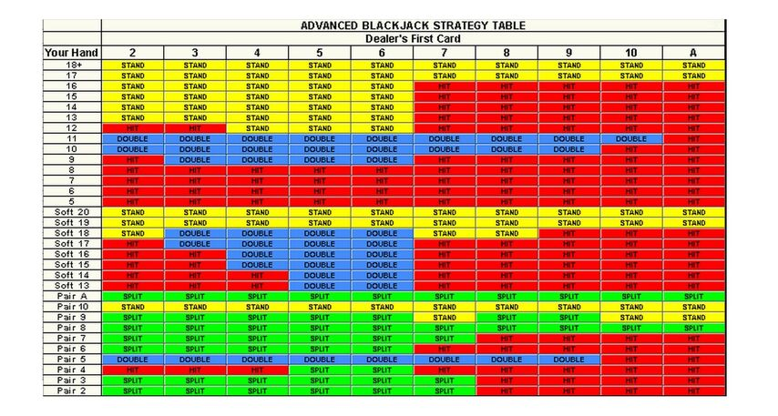
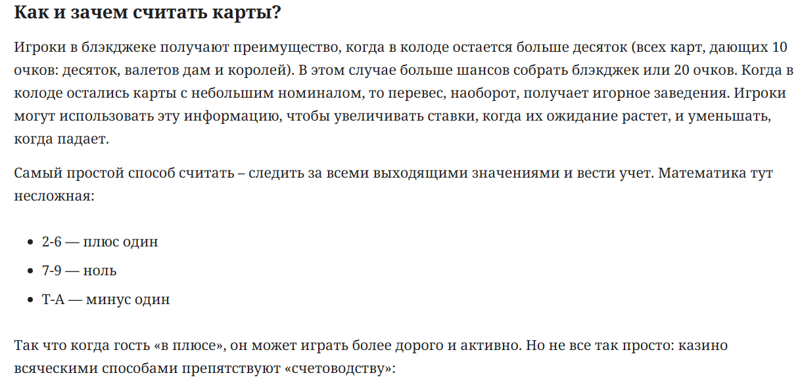
- Шансы при обычной игре — 45%
- При использовании таблиц — 49%
- При использовании счёта — 51%
Что не так с монополией?¶
Какие зоны наиболее выгодны?
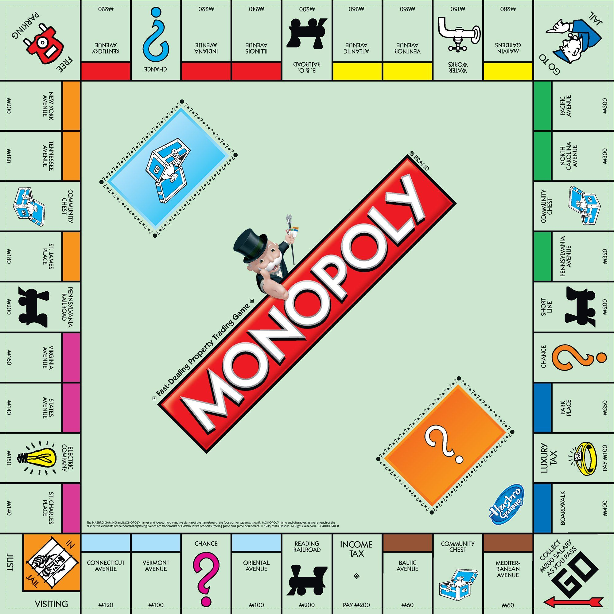
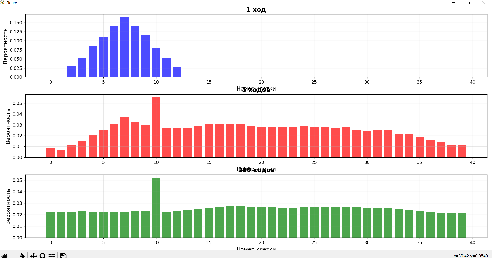
Собака бывает кусачей от знаний теорвера¶
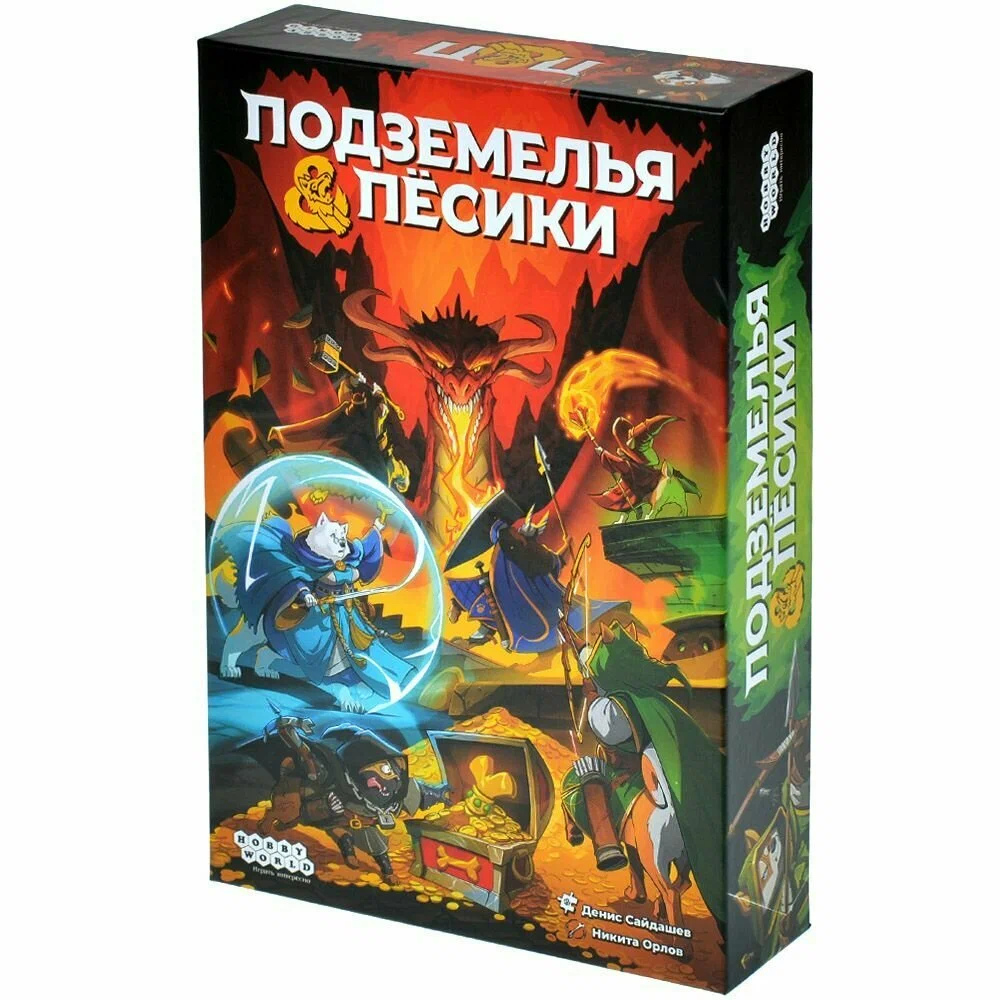
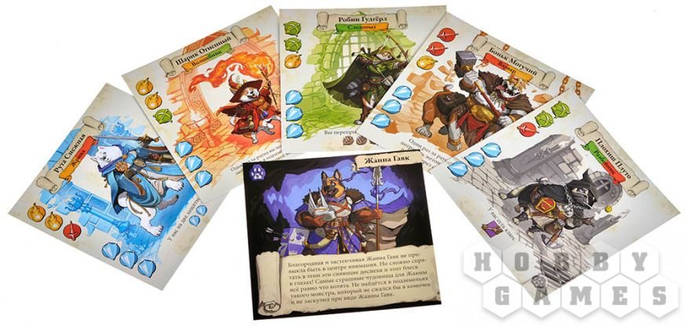
В конце игры нужно сбежать из подземелья. По пути встречаются противники 1 и 2 уровня.
- 1 уровень: просит 2 какие-либо характеристики, даёт 1 характеристику при победе, \(-1\) защиту при поражении.
- 2 уровень: просит 3 характеристики, даёт 1 защиту при победе, \(-2\) защиты при поражении.
Вероятность бежать через 5+ монстров — не более пары процентов.
У обоих способности направлены на игнорирование монстров — значит, смотрим только наборы, которых мы не можем победить.
- Если на пути есть хотя бы 1 монстр 2 уровня — Жанна будет не хуже Руты.
- Если на пути 3− или 5+ монстров — разницы не будет.
- Разница только когда ровно 4 монстра 1 уровня, которых ни один из игроков не может победить.
- Во всех прочих случаях Жанна лучше.
А ещё там ужасный баланс числа игроков и числа карт после первого побега.
Считаем ресурсы¶
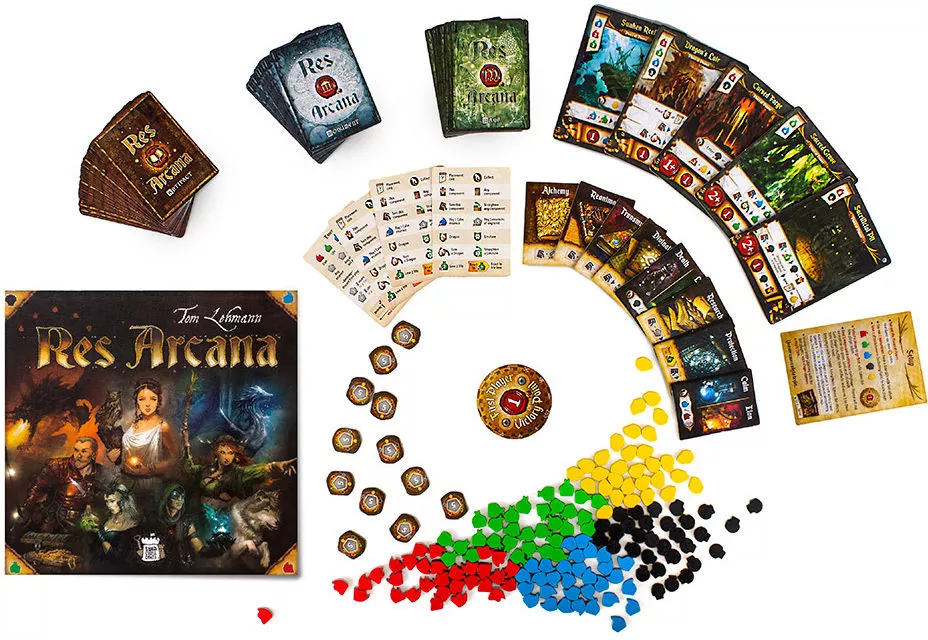
Карты в руке, колода и 6 стартовых ресурсов. В свой ход можно построить карту с руки за ресурсы или сбросить карту, чтобы получить 2 любых ресурса.
В начале игры выбрать один из предметов:
- получить 1 огонь или 1 воду;
- получить 1 смерть или 1 жизнь;
- потратить 1 ресурс и взять 1 карту из колоды в руку.
В чём дисбаланс?
Фиксится тем, что игроки выбирают предметы начиная с последнего. Правда, у первого игрока в этой игре нет никаких преимуществ.
Сравнение двух карт:
- Алхимический камень — раз в ход потратить 2 любых ресурса и превратить \(X\) любого ресурса в \(X\) золота.
- Атанор — раз в ход потратить 1 огонь и положить 2 огня на карту. Когда на карте 6 огня — сбросить и превратить \(X\) любого ресурса в \(X\) золота.
Запретные персонажи в Forbidden Desert¶
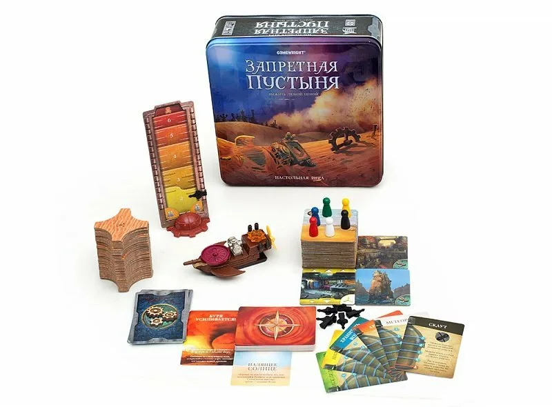
Умереть можно из-за того, что закончились тайлы песка (редко, их 48) или закончилась вода (часто).
В свой ход 4 действия:
- переместиться, чтобы поискать деталь для победы;
- убрать 1 песок;
- вскрыть 1 из 2 колодцев, чтобы все на клетке получили 2 воды (колодцы одноразовые).
В конце хода каждого игрока тянут от 3 до 6 карточек событий из колоды в 31 карту.
- 25 выкладывают песок;
- 4 заставляют всех терять по 1 воде (со старта у всех от 3 до 5);
- 3 усиливают бурю (больше карт событий после хода).
В среднем колода событий прокручивается 3–6 раз за игру.
Три персонажа:
- Хранитель воды — действием получить 2 воды из использованного колодца, может передавать воду.
- Метеоролог — потратить 1 действие, чтобы тянуть на 1 карту событий меньше.
- Археолог — одним действием убирать сразу 2 песка с 1 клетки.
Что с балансом? Баланс жив?
Лотерея¶
Как гарантированно выиграть в лотерею?
42 возможных числа, для джекпота нужно угадать 5 из 5. Какой шанс?
История румына, который 14 раз законно выиграл в лотерею
Главное блюдо: DnD¶
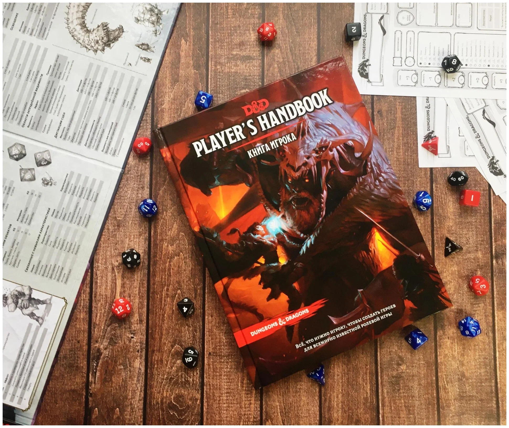
Где может сломаться баланс?
- Игра кооперативная ⇒ баланс между персонажами не так важен.
- Баланс первого хода тоже не про это.
- Баланс сложности лежит на ДМ (Wizards of the Coast пытаются балансить бои — забудем).
- Баланс промежуточных шагов нужен, но в большей мере определяется фантазией игроков и ситуациями ДМ.
В бою у игроков одна цель — победить противников, поэтому кооперативный дисбаланс ощущается остро. Хочется отыгрывать того персонажа, которого создали, и не хочется быть слабым на фоне других.
Где есть дисбаланс:
- классы не равны между собой;
- подклассы одного класса не равны;
- самое болезненное: классы, кажется, разрабатывались в отрыве друг от друга — мультикласс собирает поломанные сборки.
Самое смешное:
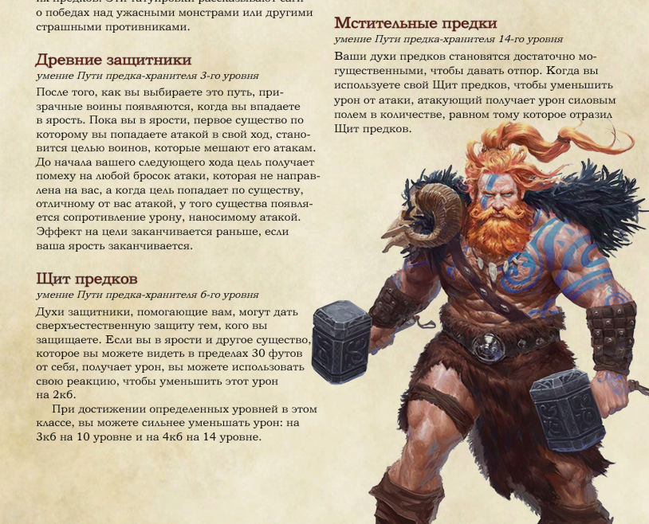
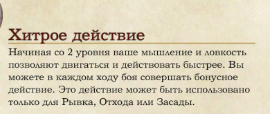
У берсерка в ярости повышенная скорость.
Паладин имеет урон с руки от Силы и урон с магии от Харизмы — вынужден качать разные параметры.
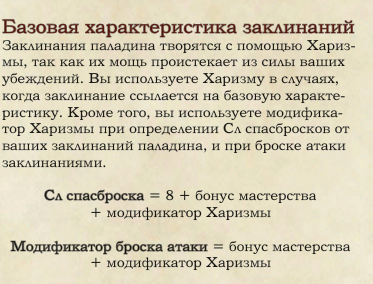
Но колдун «Ведьмовской клинок» уже на первом уровне имеет вот такую способность:
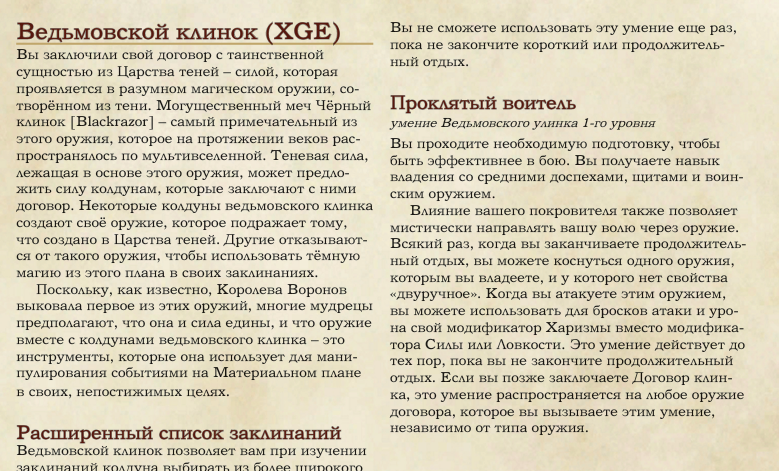
Про то, что делает с противниками паладин, наложивший проклятие ведьмовского клинка, божественную кару и сглаз, предпочту промолчать.
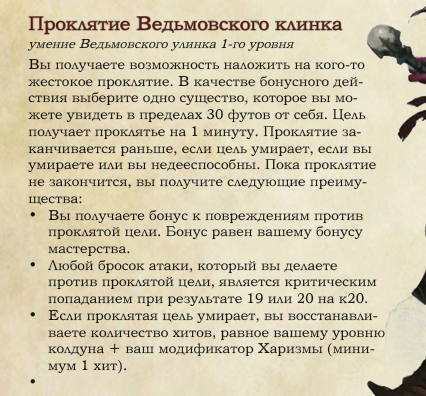
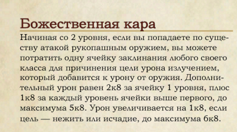
В DnD местами очень кривые формулировки.
Убийца — один из самых разочаровывающих подклассов: единственная сильная особенность срабатывает только при ударе из засады.
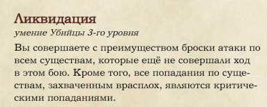
Следопыт / сумеречный охотник:
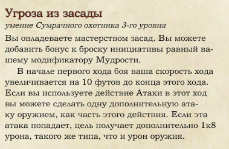
Плюс заклинание маскировки, чтобы с засадами всё было хорошо. Дальше орки с усиленными критами, мультиатаки через воина ради второго дыхания — и к 13 уровню средний урон \(\sim 350\), который игнорирует защиту, потому что все атаки — криты.
Древний дракон 21 уровня, которого потенциально могут выдать группе, имеет как раз примерно столько здоровья. Б — баланс.
В примерах выше достаточно нескольких простых начальных способностей. Сложное билдостроение почти не понадобилось.
Чтобы сломать игру, билд вообще не обязателен. Самый сломанный класс — жрец домена Сумерек.
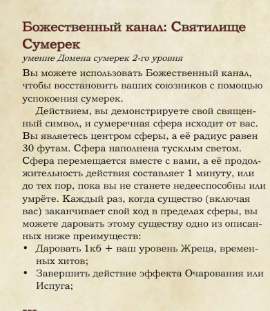
Если группа не попала в засаду, урон распределяется по воинам, а жрец хотя бы иногда вспоминает, что умеет лечить — ГМ не будет наносить группе никакого урона.
Всё выше — конкретные промахи в дизайне способностей. Бывают ещё комплексные проблемы: кривые механики, которые потом постоянно мешают разработчику. Часто это экономика (много типов ресурсов и слишком простой обмен), баланс типов (маги сильнее воинов) или формулы, которые толкают на скучную, но эффективную прокачку.
Если у воина есть урон, здоровье, защита, уклонение, скорость атаки:
- Хороший баланс — один параметр усиливает полезность другого. В формулах это часто умножение: эффективное здоровье \(=\) здоровье \(\times\) защита.
- Приемлемый — параметры складываются: здоровье \(\times\) защита \(+\) временное здоровье.
- Плохой — параметр усиливает сам себя. Простой пример — отрицание в знаменателе:
Угадайте, откуда формула.
Самый простой способ сломать DnD¶
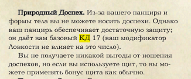
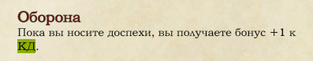
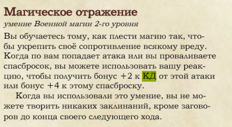
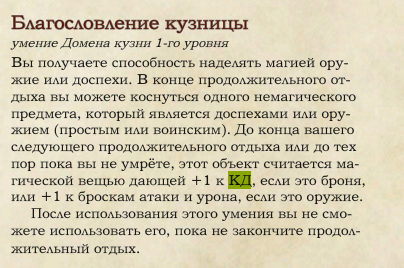
Ещё \(+2\) от щитов.
Итого 23 КД на 3 уровне, не считая предметы и баффы союзных магов.
Противники на этом уровне вряд ли имеют бонус к атакам больше \(+4\), поэтому эффективное здоровье \(\sim 30 \times 20 = 600\), а у большей части группы — \(25 \times 1{,}7 = 40\).
Если противники не маги, мастер может автоматически заканчивать бой. И это можно получить без манчкинизма — просто захотев бронированного персонажа.